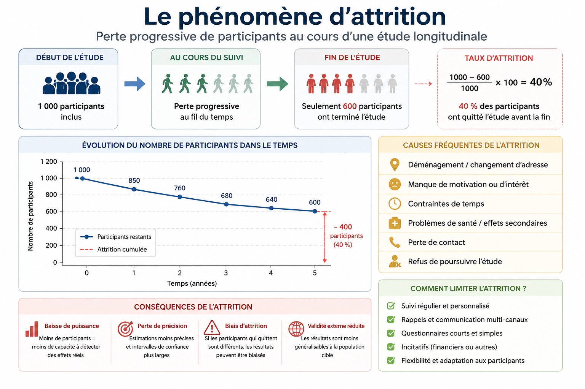

Le phénomène d'attrition désigne la perte progressive de participants, d'unités ou d'observations au cours d'une étude ou d'un processus. Le terme est utilisé dans plusieurs domaines, avec des significations légèrement différentes.
En statistique , l'attrition correspond aux participants qui quittent l'étude avant son terme ou qui deviennent injoignables dans les études longitudinales, les essais cliniques et les enquêtes.Il est fréquent en recherche clinique, en santé publique, en sciences sociales et dans les enquêtes de suivi.
En ressources humaines, l'attrition désigne la réduction naturelle des effectifs d'une organisation lorsque des employés partent (retraite, démission, décès) sans être remplacés. Par exemple, lorsqu'une entreprise compte 500 employés et perd 20 employés au cours de l'année sans embauche, elle connaît une attrition de 4 %.
En marketing, l'attrition (ou churn) désigne la perte de clients lorsqu'ils cessent d'utiliser un service ou d'acheter les produits d'une entreprise. Ce phénomène est particulièrement fréquent dans les secteurs reposant sur des abonnements, tels que les logiciels en mode SaaS (par exemple, Zoom ou SAS) ainsi que les services de télécommunications (comme Virgin Plus ou Chatr). L'attrition représente un enjeu stratégique majeur, car elle se traduit par une diminution des revenus, une augmentation des coûts d'acquisition de nouveaux clients et, à long terme, une réduction de la rentabilité de l'entreprise. Pour limiter son impact, il est essentiel d'identifier les facteurs qui en sont à l'origine avant de mettre en œuvre des stratégies de fidélisation adaptées.
Dans ce article, nous n'aborderons pas les aspects marketing de la fidélisation des clients. Nous nous concentrerons plutôt sur les causes de l'attrition d'un point de vue statistique, les mécanismes qui la sous-tendent et les conséquences qu'elle peut avoir sur les analyses de données et les modèles statistiques. Comprendre ces mécanismes est indispensable pour produire des analyses fiables, interpréter correctement les résultats et éviter les biais susceptibles de compromettre la qualité des décisions fondées sur les données.
Il arrive parfois de confondre l'attrition à la censure. Cependant, ces deux concepts sont différents et ne sont forcément pas liés à un même objectif d'analyse. La section suivante élucide les principales différences qui existent entre les deux notions.
Il est important de notifier que l'attrition et la censure sont deux concepts différents, bien qu'ils impliquent tous deux des données incomplètes. La principale différence réside dans la nature de l'information perdue et les méthodes statistiques utilisées pour la traiter. Le tableau suivant mets en exergue queques principales différences entre les deux notions.
| Critère | Attrition | Censure |
|---|---|---|
| Définition | Perte de participants au cours de l'étude. L'attrition produit des données manquantes | L'événement d'intérêt n'est pas observé complètement, mais une information partielle est disponible. La censure produit une information partielle sur le temps jusqu'à l'événement. |
| Domaine principal | Études longitudinales, enquêtes, essais cliniques. | Analyse de survie, études de durée (temps jusqu'à un événement). |
| Variable (s) d'intérêt | Peut être variée (s). | Temps de survie |
| Ce qui est perdu | Les observations futures du participant. | La date exacte de l'événement. |
| Conséquence | Données manquantes. | Temps de survie partiellement observé. |
| Méthodes d'analyse | Imputation multiple, modèles mixtes, pondération, analyses de sensibilité. | Estimateur de Kaplan-Meier, modèle de Cox, modèles paramétriques de survie. |
Cependant les deux notions peuvent être confondues dans certains cas. Lorsque la vériable d'intérêt est le temps de survenance d'un événement (maladie, décès, annulation de contrat d'assurance, etc.), l'attrition entraîne généralement la censure.
Considérons par exemple une étude sur le temps jusqu'à une rechute (maladie après un certain temps de guérison). Supposons qu'un patient quitte l'étude après deux ans. À son départ, il n'a pas rechuté.
Plusieurs approches existent selon le mécanisme des données manquantes :

Le phénomène d'attrition est un enjeu majeur dans les études longitudinales, les essais cliniques, les enquêtes et les analyses de données. Il peut réduire la puissance statistique et introduire des biais si les abandons ne sont pas aléatoires. Des méthodes comme les modèles mixtes, l'imputation multiple ou la pondération permettent d'en limiter les effets, mais la meilleure stratégie reste de prévenir l'attrition dès la conception de l'étude.
← Back to Blog